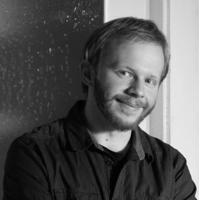

AUTOR
Johannes Schellhorn (geboren und aufgewachsen in Innsbruck) studiert seit 2013 Schnitt im Bachelorstudium an der Filmakademie Wien. Als Editor zeichnet er verantwortlich für Musikvideos (von Wanda, Magmoiselle), Kurzspielfilme (Familiengrab, Regie: Bruno Kratochvil; Der Anruf, Regie: Johann Scholz) und Dokumentarfilme (Spring Hopes – Our way to live free, Regie: Jana Sabina Reißmann). Zur Zeit arbeitet er an seinem Bachelorfilm Es kommt von oben (Regie: Felix Krisai).